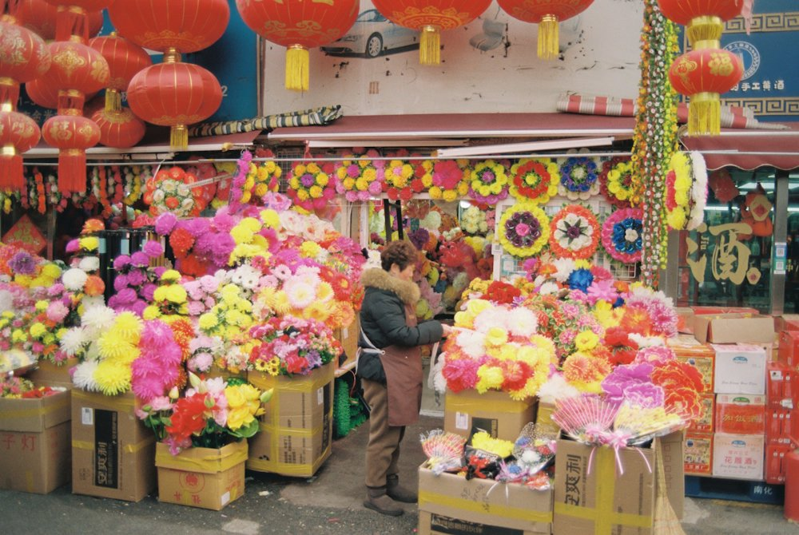

祭典历年规律华南
广州迎春花市
Guangzhou Spring Flower Fair · 广东 · 广州
最佳时间
春节前 3 天至除夕夜（2027 年约 2 月 3 – 6 日）
越秀、荔湾等各区花市除夕当晚最热闹，散市多在凌晨。
行花街是广式过年仪式感：桃花、金桔、水仙与风车把整条街染成花海。
不能错过
- 除夕夜人潮达到顶峰，越秀花市经典牌楼必打卡
- 买株桃花喻意「大红大紫」，风车转好运
旅人提醒
- 人多注意随身物品，尾市凌晨捡平价花最划算
- 地铁出行，花市周边道路除夕常交通管制
月度热力与气温
18°
1
19°
2
22°
3
26°
4
30°
5
32°
6
34°
7
34°
8
32°
9
29°
10
25°
11
21°
12
适宜度（柱高，5=最佳）依据活动窗口与气候整理；气温为月均高温近似值（°C），仅供规划参考，出行前请查当地预报。
编辑核实笔记 · 整理自广州文旅历年公告，非亲历；以当年官方安排为准。
预订 / 官网
官方页面：查看官网 / 官方信息 ↗ · 票价与预约以官网为准
联盟链接含占位 tracking id（Booking/Klook/Trip.com），上线替换为真实 ID 即生效；均带 utm 参数与点击统计。